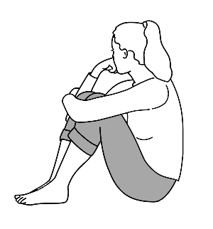

L’accompagnement psychologique individuel
Les rencontres avec un psychologue s’aménagent selon
vos besoins :
Elles peuvent être
ponctuelles pour vous soutenir dans une période difficile de
votre vie (deuil, burn out, changement de milieu de vie, scolaire ou
professionnel…).
Elles vous aident à
mobiliser des ressources, à mettre en mouvement vos
représentations de la situation et les émotions associées afin
de cultiver vos capacités d'adaptation face aux difficultés
rencontrées.
Ces rencontres peuvent également
se poursuivre dans le temps et vous ouvrir l'espace d'un processus
de changement dans un cadre psychothérapeutique.
Dans ce cadre, j'utilise diverses approches qui me
permettent de m'adapter à vos besoins en fonction des difficultés
qui vous traversent.
Je vous propose un espace sécurisant qui accueille
avec bienveillance votre singularité, vous
accompagne et vous écoute sans jugement tout en
respectant le principe de confidentialité.
Cet espace vous offre la possibilité de
réinterroger vos liens et vos limites, vos désirs et vos
souffrances afin de vous représenter l’histoire qui vous
habite
(transmission généalogique et histoire familiale, héritage social et
culturel, traumatismes…) et vous permettre de
reconstruire la vôtre.
Vous êtes l’acteur principal de votre cheminement.
En ce sens, je vous accompagne pour ouvrir sur votre chemin
l'accès à des ressources qui vous correspondent et
que vous seul pouvez saisir.
Le premier entretien
Le premier entretien est un temps de rencontre qui permet de
préciser le sens de votre démarche et de
construire ensemble
le cadre de l’accompagnement qui correspond à vos
besoins.
De ce premier lien, nous échangeons sur les différents éléments qui
motivent votre venue et font obstacle à votre épanouissement
personnel, pour définir ensemble votre demande.
Cela peut être lié à des difficultés vécues au quotidien, des
expériences récentes qui bouleversent le cours de votre vie ou des
expériences passées qui font retour.
Aussi, nous relèverons l'ensemble des aspects que vous souhaitez
interroger et élaborer pour ressentir un
"mieux être" et soulager votre quotidien. Il s'agit
de
clarifier votre demande et d'évaluer vos objectifs.
Ce premier lien permet également d'échanger sur vos éventuelles
interrogations concernant le cadre de cet accompagnement
: modalités d'interventions, approches psychothérapeutiques, outils
et méthodes pour soutenir la thérapie…
Réaliser ce premier pas amorce déjà
une évolution en vous. Vous déciderez à la suite
de ce(s) premier(s) entretien(s) si vous désirez poursuivre cet
accompagnement psychologique à mes côtés. Nous élaborons alors un
cadre : durée, fréquence des entretiens et honoraires.
Nous pouvons également convenir ensemble d’une
orientation vers un autre professionnel ou un
dispositif de soin plus adapté à vos besoins.
La durée d'une thérapie ne peut se définir à l'avance et varie en
fonction de chacun. Vous êtes libre d'y mettre fin à tout moment.
La psychothérapie
Des interrogations, un état de souffrance, des difficultés
personnelles ou relationnelles ou plus simplement un désir de vous
développer ou d'apprendre à vous connaître sont autant de signes qui
peuvent vous amener à prendre un temps de psychothérapie.
Cette démarche vous aide à
vous ressourcer et à retrouver du sens.
Le cadre psychothérapeutique s'aménage en fonction des
besoins singuliers qui se révèlent lors de nos
rencontres.
Un premier entretien est essentiel pour évaluer
les difficultés qui vous traversent et adapter les approches qui
s'accordent au plus juste à votre demande.
Mes méthodes s'ajustent selon l'âge de la personne concernée et en
fonction de sa sensibilité, de ses besoins et de ses capacités
(psychiques, cognitives, motrices, etc.) pour
développer ses processus internes et soutenir un état
d'épanouissement.
Le soutien psychologique
Je vous accueille pour
des séances ponctuelles ou régulières dont la
durée peut varier en fonction de la demande élaborée lors du premier
entretien.
Dans ce cadre, je vous accompagne pour
vous soutenir à des périodes sensibles de votre vie
(deuil, situation de harcèlement, changement de milieu de vie,
scolaire ou professionnel, relations conflictuelles, addiction
etc.).
Ces séances vous aident à
mobiliser des ressources et à cultiver vos capacités d'adaptation
face aux difficultés rencontrées. Je peux également vous accompagner
à mettre en place des méthodes pour mieux les dépasser, à l'aide de
différents protocoles.
Les raisons pour consulter
Je vous accueille et vous accompagne pour faire face à des
situations telles que :

- -La perte, le deuil d’un proche
-
-L’annonce d’une maladie, d’un handicap, l’accompagnement
d’un proche
- -Une rupture difficile
-
-Un changement dans la sphère familiale :
naissance, mariage, séparation, famille recomposée
-
-Un traumatisme suite à un accident, une
agression physique ou verbale
-
- Des difficultés professionnelles : perte
d’emploi, mutation, reconversion, harcèlement …
-
-Des difficultés relationnelles, familiales,
conjugales
-
-Un manque d’estime de soi, de confiance,
d’affirmation
- -L’anxiété, l’angoisse, l’irritabilité
- -Des peurs ou phobies
- -Des troubles de l’alimentation
- -Des troubles du sommeil
-
-Des problèmes d’addiction(s) et de dépendance(s)
-
- Des questionnements sur votre identité (de
genre, votre orientation sexuelle, votre place dans les
groupes etc.)